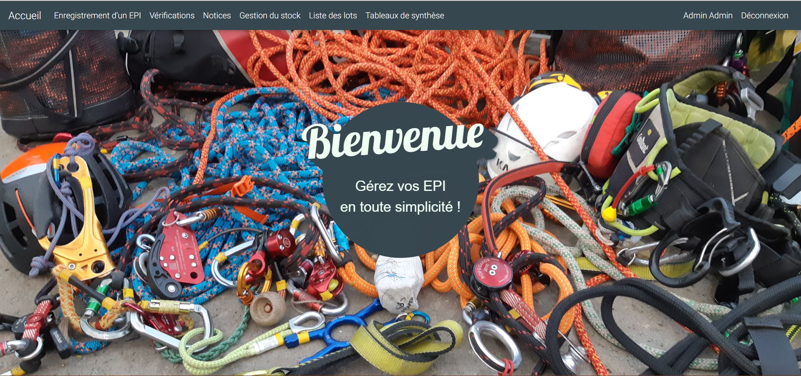

<div class="text-center">
	<h1 class="text-uppercase" mat-dialog-title>Gestion EPI</h1>
</div>

<mat-dialog-content>
	<div class="container">
		<div class="row">
			<div class="col-12 col-lg-8 offset-lg-2 mb-3 text-center">
				
			</div>
			<!-- <div class="col-12 text-center">
				<p i18n>
					Lors de ma deuxième année à Polytech Tours, j'ai travaillé avec sept autres étudiants pour le compte
					du lycée agricole des Fondettes à Tours. Nous avons développé une application afin de faciliter la
					gestion de leurs EPI, en effet jusqu'ici toute la vérification se faisait par papier et la
					conservation dans un local (pratique mais fastidieux dans la durée). Notre application permet donc
					aujourd'hui de faire la vérification de ces EPI directement ligne et le stockage se fait dans une
					base de données. Nous avons développé plusieurs fonctionnalités, avec tout d'abord l'enregistrement
					et la connexion de vérificateurs. Mais aussi l'insertion, vérification et suppression des EPI
					(automatique selon leur durée de vie et / ou leur mise au rebut ou en quarantaine dans le cas où ils
					seraient endommagés). Enfin, nous permettons le suivi des EPI via plusieurs tableaux (quarantaine,
					rebut, EPI en fin de vie) et la génération de fichiers PDF pour les vérifications (afin d'avoir un
					format papier si besoin) et pour les tableaux. Pour le développement, nous avons utilisé les
					langages HTML, CSS, JS et PHP avec JQuery et CodeIgniter (framework PHP).
				</p>
			</div> -->
			<div class="col-12 col-lg-6">
				<div mat-subheader>Fonctionnalités</div>
				<ul class="list-group list-group-flush">
					<li class="list-group-item">Gestion des Équipements de Protection Individuelle (EPI)</li>
					<li class="list-group-item">Impression PDF des vérifications des EPIs</li>
					<li class="list-group-item">Suivi du cycle de vie des EPIs (tableaux)</li>
					<li class="list-group-item">Pour une formation d'élaguage d'un lycée agricole</li>
					<li class="list-group-item">Gestion des vérificateurs</li>
					<li class="list-group-item">Gestion des EPIs</li>
				</ul>
			</div>
			<div class="col-12 col-lg-6">
				<div mat-subheader>Contexte</div>
				<ul class="list-group list-group-flush">
					<li class="list-group-item">Polytech Tours</li>
					<li class="list-group-item">Améliorer la vérification et le suivi de la vérification des EPIs</li>
					<li class="list-group-item">Développement web HTML, CSS, JS, PHP</li>
					<li class="list-group-item">Base de données SQL</li>
					<li class="list-group-item">JQuery, Bootstrap, CodeIgniter</li>
					<li class="list-group-item">Spécifications fonctionnelles et techniques</li>
				</ul>
			</div>
			<div class="col-12 text-center">
				<a href="https://github.com/kilian-paquier/gestion-epi" class="mx-1" target="_blank">
					<fa-icon [icon]="faGithub" class="fa-3x"></fa-icon>
				</a>
			</div>
			<div class="col-12">
				<mat-list>
					<mat-list-item>
						<mat-icon mat-list-icon>calendar_today</mat-icon>
						<div i18n>Janvier à Mai 2019</div>
					</mat-list-item>
					<mat-divider></mat-divider>
					<mat-list-item>
						<mat-icon mat-list-icon>location_city</mat-icon>
						<div i18n>Lycée agricole des Fondettes</div>
					</mat-list-item>
				</mat-list>
			</div>
		</div>
	</div>
</mat-dialog-content>

<mat-dialog-actions align="end">
	<button mat-button mat-dialog-close i18n="@@closedialog" class="text-uppercase">Fermer le projet</button>
</mat-dialog-actions>
